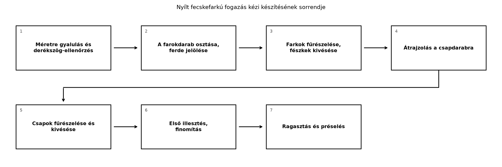

A fiók elejének sarka az egyik legjobban igénybe vett pontja egy bútornak. Ha a fiókot naponta rángatjuk, és a sarokkötés csak össze van szögezve vagy rosszul illeszkedik, a fiók előbb-utóbb lötyögni kezd, a homloklapja eláll, a fenék megereszkedik. A fogazás azért fontos, mert nagy ragasztási felületet ad, és a fecskefarkú fogazás alakzáróan is megakadályozza, hogy a két lap széthúzható legyen. Ebben az alfejezetben előbb az egyenes fogazást tanulod meg, utána a nyílt fecskefarkú fogazást, majd a fiókelőn használt félig takart változatot.
Képzelj el egy tömörfa láda sarkát. Kívülről a deszka homlokélé, illetve a másik deszka lapja látszik. Ha a kötést szétszednénk, az egyik darabon a farkok: hátrafelé szélesedő, trapéz alakú fogak sorakoznak. A másik darabon a csapok: keskenyebb, a farkok közé illeszkedő fogak vannak. A fecskefarok alakja miatt a farok a csap mögé szorul, ezért a két lapot a ragasztó mellett a forma is összetartja.
A kézi készítés sorrendje mindig gondos jelölés és türelem; a gépi fogazásnál ugyanezt a geometriát sablon vagy CNC-program hozza létre.

Definíció. Az egyenes fogazás olyan kávakötés, amelyben a fogak és a fészkek oldalai a lap élével párhuzamosak, tehát a fog két oldala merőleges a homlokélre. Elsősorban nagy ragasztási felületet ad, és akkor használjuk, ha a sarok húzásra nem akar szétnyílni, de a ferde alakzárás nem követelmény, vagy gépi fogazósablonnal gyorsan akarunk dolgozni.
Definíció. A nyílt fecskefarkú fogazás olyan sarokkötés, amelynél a fogak mindkét oldalon átmennek, és a fogak külső, szélesebb vége hátrafelé szélesedik. A szélesedő farok alakja miatt a kötés a sarok irányában húzásra nem húzható szét. Az egyik alkatrészt farokdarabnak, a másikat csapdarabnak nevezzük.
Definíció. A félig takart fecskefarkú fogazás olyan fecskefarkú kötés, amelynél az egyik lapon – jellemzően a fiók előlapján – a fészkek nem mennek át a homlokoldalig. Elölnézetből az előlap tömör, a fogak csak a belső oldalon és a fiók oldalán látszanak.
Megjegyzés. A hazai műhelynyelvben a fecskefarkat gyakran egyszerűen „fecskefarknak” vagy „fecske” néven emlegetik; németül Schwalbenschwanz, angolul dovetail.
Szabály. A fecskefarok-szög tájékoztató aránya puhafánál 1:6, keményfánál 1:8 – 1 mm eltolás 6, illetve 8 mm hosszon. Ez a kézi fogazás rajzolásának hagyományos értéke, gépnél vagy keskeny fogazásnál a sablonhoz igazodik. (ellenőrizendő: szakkönyvi hivatkozás)
Összefüggés. Az 1:8 arány szögben:
Egy ferde oldal eltolása (a farok széles és keskeny vége között oldalanként):
ahol a fog hossza (a másik alkatrész vastagsága), az arány nevezője.
Példa. Ha a fiók oldallapja vastag, és puhafához 1:6 arányt választunk, akkor egy ferde oldal eltolása:
a farok széles és keskeny vége közötti szélességkülönbség pedig .
Az ábra a farokdarabot és a csapdarabot, a farok hajlását és az átrajzolást mutatja 10 mm vastag, 80 mm széles lapokon (1:6). Egy ferde oldal eltolása ; a farok széles és keskeny vége közötti különbség ennek kétszerese, . Átrajzoláskor a farok körvonala alatti rész a csapdarab hulladéka – ide kerülnek a farkok. A HTML-változat osztáskalkulátorral kirajzolja a farkokat, és kiírja a méreteket.
Továbbvitt eredmény. A fogazás geometriáját és szerelési elvét használjuk a fiókok, ládák és kávaszerkezetű szekrények készítésénél az Idegencsapos kávakötések: köldökcsap, lamelló, sablonok és a Keret- és kávaszerkezetű tömörfa szekrény gyártása alfejezetben.
A fogazáshoz tömör, lehetőleg közepesen kemény fa alkalmas. Tölgy, bükk, kőris szépen tartja a vágást; puha fenyőnél a ferde farok könnyebben törhet. A lécek legyenek nyugodt, egyenes rostúak, mert a csavarodott anyag a vésésnél reped.
Jellemző szerszámok:
Az egyenes fogazásnál a fogak és fészkek méretét úgy választjuk, hogy a deszka szélességét egyenletesen felossza, és az illesztéshez ne maradjon túl vékony szélső anyag.
Szabály. Az egyenes fogazás osztása: a deszka szélességét a fogak és a fészkek összegéből állítjuk össze. Jelölje:
Ekkor a szélső fészkeket is beleszámítva:
Számítás. Egy 100 mm széles deszkán 4 fog és 5 fészek legyen. Ha a fészkeket -re választjuk, a fogszélesség:
Ellenőrzés: . ∎
Recept – egyenes fogazás kézi készítése
A fecskefarkú fogazásnál a hagyományos sorrend: először a farokdarabot készítjük el, majd arról rajzoljuk át a csapdarabot. Így a csapok pontosan a farokhoz illeszkednek, kisebb a halmozódó jelölési hiba.
Recept – nyílt fecskefarkú fogazás
Fiókoknál a fiók előlapján általában félig takart fogazást készítünk, hogy az előlap homlokoldala tömör, szép felület maradjon. A fiók oldallapjain a farok, az előlap belső oldalán a csapok és a fészkek helyezkednek el. A fészkek az előlap vastagságának körülbelül kétharmadáig–háromnegyedéig hatolnak be, de nem mennek át.
Recept – félig takart fecskefarkú fogazás fiókelőn
Egyenes fogazás géppel. A legegyszerűbb gépi fogazásnál a fogakat és fészkeket fogazó sablon segítségével készítik, például felsőmarógéppel. A sablon fogai vezetik a marót, a maró pedig azonos osztással vágja a fogakat. Egyenes fogazáshoz elegendő olyan sablon, amely a csap- és a farokdarabot külön-külön megmunkálja.
Fecskefarkú fogazás géppel. A fecskefarkú fogazáshoz ferde vezetőrésekkel ellátott fecskefarkú sablont használnak. A sablont a munkadarabokra rögzítik, a felsőmarógépet másológyűrűvel vagy csapágyas maróval vezetik. A sablon kialakításától függően a gép egy menetben megmunkálhatja a farkokat, a másik sablonoldal pedig a csapokat.
Gépbiztonság. A gépi fogazást csak betanított, felügyelt tanuló végezheti. A felsőmarógépen a védőburkolat, a marószerszám rögzítése és a megengedett fordulatszám mindig ellenőrizendő. Védőburkolat nélkül, egyedül, fáradtan ne dolgozz. Az elszívást kapcsold be, viselj védőszemüveget és – faportól függően – légzésvédőt. A munkadarabot soha ne vezesd kézzel a szerszám közelében; használj sablont, szorítót és tolófát.
Megjegyzés. CNC megmunkálóközponton a fogazás marópályával készül: a program a farok és a csap geometriáját az alkatrész koordinátái alapján generálja. A pontos programnyelv gépfüggő, ezért a CNC-fogazást csak a gépkönyv és a vezérlő dokumentációja szerint szabad elvégezni.
A fogazás akkor jó, ha szárazon enyhe szorulással illeszkedik. Túl szoros kötésnél a ragasztó kiszorul, a fa megfeszül, és a préselésnél repedhet. Túl laza kötésnél a ragasztóhézag kitölti ugyan a rést, de a kötés nem lesz erős.
Ragasztáshoz belső bútoroknál általában PVAc-alapú, D2 vagy D3 osztályú ragasztót használnak. Nedves vagy kültéri környezetben a magasabb vízállósági osztály szükséges. A pontos ragasztót és a nyitott időt a gyártói műszaki adatlap adja meg. (ellenőrizendő: MSZ EN 204 szerinti osztály és a termék műszaki adatlapja)
Hiba. Tünet: a száraz illesztésnél a fúga a farok széles végénél összezár, de a keskeny végénél 1–2 mm-es rés marad. Lehetséges okok: a fészek ferde fala nem követi a farok szögét, vagy a jelölővonalat a fűrész átvágta. Vizsgálat: bontsuk szét a darabokat, ellenőrizzük a ferde vonalakat, és keressünk fűrész- vagy vésőnyomot a hulladékon kívül. Valódi ok: a csapdarabon a véső a fészek falát a farok szögénél meredekebbre döntötte, ezért a csap csak a széles végén fekszik fel. Javítás: a csap ferde oldalát vékonyan, a farok szögéhez igazítva vésjük, közben a farok széles végét ne bántsuk. Megelőzés: mindig a farokról rajzoljunk át, és a vésést a jelölővonalig, de azon túl ne végezzük.
Technológiai lap. Nyílt fecskefarkú fogazású tömörfa láda sarokkötésének kézi készítése.
Cél: 10 mm vastag, egyenes rostú puhafa vagy keményfa lapokból két-két szemközti oldallap összefogazása, hézagmentes, ragasztható sarok.
Anyagok: 4 db gyalult léc, kész méret pl. 200 × 80 × 10 mm; PVAc-D3 ragasztó; csiszolóvászon.
Szerszámok: derékszög, tolómérő, jelölőtű, fecskefarok-jelölő, háti fűrész, 6–10 mm-es vésők, kalapács, szorítók, párhuzamvonalzó.
Gépbiztonság. A művelet nagyrészt kézi; ha kézi fúrógépet használsz, csak stabil befogás mellett, védőszemüveggel dolgozz. Porképző csiszolásnál használj elszívást vagy légzésvédőt.
Indítás előtti ellenőrzés: szerszámok élesek; munkaterület tiszta; a munkadarabok nincsenek elcsavarodva, repedve; a fűrészfogak épek.
Lépések:
Túl szoros fogazás. A vésés vagy fűrészelés átlépte a jelölővonalat, esetleg a jelölés nem a hulladék oldalán volt. A préselésnél az alkatrész megfeszül, repedhet. Helyes: a fűrész és a véső a hulladék oldalán dolgozzon; a jelölővonal maradjon meg.
Lötyögő fúga. A csapdarabon a hulladékot túl sokat vettük ki, az illesztés nem zár. Farok-csere nélkül nehéz javítani. Helyes: az illesztést gyakran, kis lépésekben végezzük.
Rossz irányú fecskefarok. A farok szélesebb vége befelé vagy a rossz oldalra kerül. A kötés akár szét is húzható, mert a forma nem zár. Helyes: a jelölésnél a farkok széles oldala a külső homlokél felé, a szűk oldala a fészek alja felé nézzen.
Átütő fészek félig takart fogazásnál. A fészek túl mély, a fúró vagy a véső átment a homloklapon. Helyes: mélységütközőt használjunk, és a fészekmélységet a homlokoldal alatt hagyjuk.
Elcsúszott jelölés. Az átrajzolásnál a darab elmozdul, a fészkek nem fedik egymást. Helyes: a farokdarabot rögzítsük, és átrajzolás közben ne billentsük el.
Valós eset. Egy tanuló első fiókjánál a félig takart fecskefarkú fogazás elöl nézve szép volt, de a fiók oldala 1 mm-rel kijjebb állt az előlapnál. A vizsgálatnál kiderült, hogy a fészkek mélysége a fiók előlapjának szélén nagyobb volt, középen pedig kisebb, mert a fészek középen sekélyebb maradt (a vésőt először fúróval sekélyen kimélyítette, majd a széleken túlvésett). A fiókoldal emiatt középen ütközött a fészekfenéken, és a szélein 1 mm-rel kiállt. A javítás a ragasztás előtti száraz illesztéskor a fészekfenék síkra vésése volt, a mélységet mélységütközős jelölővel ellenőrizték; a tanulság az lett, hogy a fészek alját előbb síkra kell igazítani, és csak utána illeszteni a csapot.
1. feladat (A). Fogalmazd meg, mi a különbség az egyenes fogazás és a nyílt fecskefarkú fogazás között.
2. feladat (A). Adj meg két olyan terméket, ahol félig takart fecskefarkú fogazást használnak.
3. feladat (B). Számítsd ki egy ferde oldal eltolását és a farok szélességkülönbségét (2e), ha a csatlakozó anyag vastagsága 18 mm, és keményfához 1:8 arányt használsz.
4. feladat (B). Egy egyenes fogazású káva 120 mm széles. A fogak száma 5, a fészkek szélessége 10 mm. Mekkora egy fog szélessége? Használd a összefüggést, és ellenőrizd az eredményt.
5. feladat (C). Hibaelemzés: egy vevő reklamál, mert az új tömörfa fiók előlapján a sarokban hajszálrepedés látszik. Írd le a lehetséges okokat, a vizsgálat lépéseit, a valószínű okot, a javítást és a megelőzést.
6. feladat (D). Készíts ellenőrzőlistát egy félig takart fecskefarkú fióksarok száraz illesztéséhez. Legalább hat ellenőrzési pontot adj meg, mindegyiknél jelöld az eszközt és a tájékoztató tűrést.
1. feladat. Az egyenes fogazás fogainak oldalai párhuzamosak a lap élével, tehát a fog téglalap alakú, és elsősorban ragasztási felületet biztosít. A nyílt fecskefarkú fogazásnál a farok trapéz alakúan hátrafelé szélesedik, így a kötés a sarok irányában húzásra nem húzható szét, mechanikailag is zár.
2. feladat. Pl. tömörfa fiók: az előlap és az oldallap sarokkötése; tömörfa láda vagy doboz sarkai; elegánsabb tárolódobozok is ide tartoznak.
3. feladat. Adott: , . Keresett: . Képlet: . Behelyettesítés: ; a szélességkülönbség . Ellenőrzés: . ∎
4. feladat. Adott: , , . Keresett: . Képlet: . Behelyettesítés:
Ellenőrzés: . ∎
5. feladat. Tünet: a fiók előlapján a félig takart fogazás sarka mellett hajszálrepedés. Lehetséges okok: túl szoros fészek; túl mély fészek; a préselésnél túl nagy erő; a fészek alja nem sík, emiatt a csap megtámaszkodik; a fa túl száraz vagy repedésre hajlamos futású. Vizsgálat: szétszedés előtt nézd meg, a repedés a fészek aljából indul-e; ellenőrizd a fogak szorulását, a fészekmélységet, a csap hosszát. Valódi ok: feltételezve, hogy a fészek alja nem volt sík, a csap a fészek két szélén feküdt fel, és a préseléskor ékhatást fejtett ki, ami a homlokoldalt szétfeszítette. Javítás: ha csak hajszálrepedés, száradás után lehet tömíteni, de ha teherhordó helyen van, az alkatrészt cserélni kell. Megelőzés: a fészek alját síkra kell vésni, az illesztést szárazon ellenőrizni, és a préselésnél fokozatosan, derékszögben szorítani.
6. feladat. Ellenőrzőlista:
A fogazás két széles, egymásra merőleges deszka sarokkötése. Az egyenes fogazás téglalap alakú fogakkal és fészkekkel ad nagy ragasztási felületet. A nyílt fecskefarkú fogazás farok- és csapdarabból áll; a farok szélesebb vége hátrafelé szélesedik, ezért a kötés húzásra alakzáró. A szög tájékoztató aránya 1:6 puhafánál, 1:8 keményfánál, ami 7,1°-os ferdeség 1:8-nál. Egy ferde oldal eltolása , a farok széles és keskeny vége közötti különbség , ahol a fog hossza. A félig takart fecskefarkú fogazás fiókelőn használatos: a fészkek az előlapba nem mennek át, a homlokoldal tömör marad. Kézi készítésnél a farokdarabot először készítjük, arról rajzolunk át, és a fűrész a hulladék oldalán vág, hogy a jelölővonal mögött maradjon. Gépi fogazásnál fogazósablont és felsőmarót, illetve CNC-programot használunk. A jó illesztés szárazon enyhén szorul; a túl szoros kötés préseléskor reped, a túl laza kötés gyenge. Továbbvitt eredmény: a fecskefarkú fogazást használjuk a fiókos és kávaszerkezetű bútorok szerelésénél.